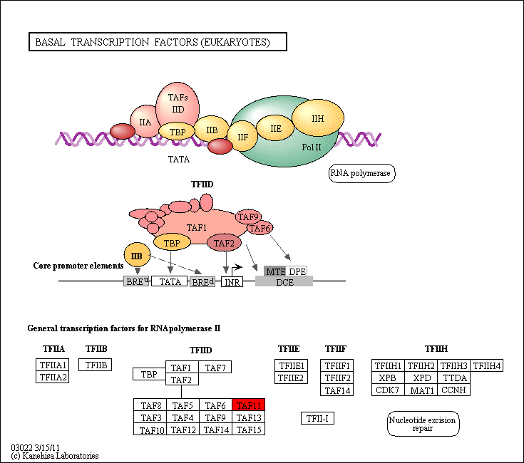

Basal transcription factors - Oryza sativa japonica (Japanese rice) (RefSeq)
[
Pathway menu
|
Organism menu
|
Pathway entry
|
Download KGML
|
User data mapping
]
Reference pathway
Reference pathway (KO)
-----< Set personalized menu >-----
-----< Sort below by alphabet >-----
Homo sapiens (human)
Homo sapiens (human) + Disease/drug
Pan troglodytes (chimpanzee)
Macaca mulatta (rhesus monkey)
Mus musculus (mouse)
Rattus norvegicus (rat)
Canis familiaris (dog)
Bos taurus (cow)
Sus scrofa (pig)
Equus caballus (horse)
Monodelphis domestica (opossum)
Ornithorhynchus anatinus (platypus)
Gallus gallus (chicken)
Taeniopygia guttata (zebra finch)
Xenopus laevis (African clawed frog)
Xenopus tropicalis (western clawed frog)
Danio rerio (zebrafish)
Branchiostoma floridae (Florida lancelet)
Ciona intestinalis (sea squirt)
Strongylocentrotus purpuratus (purple sea urchin)
Drosophila melanogaster (fruit fly)
Drosophila pseudoobscura pseudoobscura
Drosophila ananassae
Drosophila erecta
Drosophila persimilis
Drosophila sechellia
Drosophila simulans
Drosophila yakuba
Drosophila grimshawi
Drosophila mojavensis
Anopheles gambiae (mosquito)
Aedes aegypti (yellow fever mosquito)
Culex quinquefasciatus (southern house mosquito)
Apis mellifera (honey bee)
Nasonia vitripennis (jewel wasp)
Tribolium castaneum (red flour beetle)
Acyrthosiphon pisum (pea aphid)
Caenorhabditis elegans (nematode)
Caenorhabditis briggsae
Brugia malayi (filaria)
Schistosoma mansoni
Nematostella vectensis (sea anemone)
Hydra vulgaris
Trichoplax adhaerens
Arabidopsis thaliana (thale cress)
Ricinus communis (castor bean)
Populus trichocarpa (black cottonwood)
Vitis vinifera (wine grape)
Oryza sativa japonica (Japanese rice) (RefSeq)
Sorghum bicolor (sorghum)
Zea mays (maize)
Physcomitrella patens subsp. patens
Chlamydomonas reinhardtii
Ostreococcus lucimarinus
Cyanidioschyzon merolae
Saccharomyces cerevisiae (budding yeast)
Ashbya gossypii (Eremothecium gossypii)
Kluyveromyces lactis
Lachancea thermotolerans
Vanderwaltozyma polyspora
Candida glabrata
Komagataella phaffii
Debaryomyces hansenii
Scheffersomyces stipitis
Candida albicans
Yarrowia lipolytica
Neurospora crassa
Podospora anserina
Magnaporthe oryzae
Sclerotinia sclerotiorum
Botrytis cinerea
Aspergillus nidulans
Aspergillus fumigatus
Aspergillus oryzae
Aspergillus niger
Aspergillus flavus
Aspergillus fischeri
Penicillium rubens
Coccidioides immitis
Schizosaccharomyces pombe (fission yeast)
Cryptococcus neoformans JEC21
Cryptococcus neoformans B-3501A
Laccaria bicolor
Moniliophthora perniciosa
Ustilago maydis
Malassezia globosa
Encephalitozoon cuniculi
Monosiga brevicollis
Dictyostelium discoideum (cellular slime mold)
Entamoeba histolytica
Entamoeba dispar
Plasmodium falciparum 3D7
Plasmodium falciparum Dd2
Plasmodium falciparum HB3
Plasmodium yoelii
Plasmodium chabaudi
Plasmodium berghei
Plasmodium knowlesi
Plasmodium vivax
Theileria annulata
Theileria parva
Babesia bovis
Cryptosporidium parvum
Cryptosporidium hominis
Toxoplasma gondii
Tetrahymena thermophila
Paramecium tetraurelia
Phaeodactylum tricornutum
Thalassiosira pseudonana
Trypanosoma brucei
Trypanosoma cruzi
Leishmania major
Trichomonas vaginalis
Giardia lamblia
Microbacterium sp. CGR1
Methanocaldococcus jannaschii
Methanocaldococcus fervens
Methanocaldococcus vulcanius
Methanococcus maripaludis S2
Methanococcus maripaludis C5
Methanococcus maripaludis C6
Methanococcus maripaludis C7
Methanococcus aeolicus
Methanococcus vannielii
Methanosarcina acetivorans
Methanosarcina barkeri Fusaro
Methanosarcina mazei Go1
Methanococcoides burtonii
Methanosaeta thermophila
Methanospirillum hungatei
Methanocorpusculum labreanum
Methanoculleus marisnigri
Methanoregula boonei
Candidatus Methanosphaerula palustris
Methanocella arvoryzae
Methanothermobacter thermautotrophicus
Methanosphaera stadtmanae
Methanobrevibacter smithii
Methanopyrus kandleri
Archaeoglobus fulgidus DSM 4304
Halobacterium sp. NRC-1
Halobacterium salinarum
Haloarcula marismortui
Natronomonas pharaonis
Halorhabdus utahensis
Halomicrobium mukohataei
Haloquadratum walsbyi DSM 16790
Halorubrum lacusprofundi
Thermoplasma acidophilum
Thermoplasma volcanium
Picrophilus torridus
Pyrococcus horikoshii
Pyrococcus abyssi
Pyrococcus furiosus DSM 3638
Thermococcus kodakarensis
Thermococcus onnurineus
Thermococcus gammatolerans
Thermococcus sibiricus
Aeropyrum pernix
Staphylothermus marinus
Ignicoccus hospitalis
Desulfurococcus kamchatkensis
Hyperthermus butylicus
Sulfolobus solfataricus P2
Sulfolobus acidocaldarius DSM 639
Sulfolobus islandicus L.S.2.15
Sulfolobus islandicus M.14.25
Sulfolobus islandicus M.16.27
Sulfolobus islandicus M.16.4
Sulfolobus islandicus Y.G.57.14
Sulfolobus islandicus Y.N.15.51
Metallosphaera sedula
Pyrobaculum aerophilum
Pyrobaculum islandicum
Pyrobaculum calidifontis
Pyrobaculum arsenaticum
Pyrobaculum neutrophilum
Caldivirga maquilingensis
Thermofilum pendens
Nitrosopumilus maritimus
Nanoarchaeum equitans
Candidatus Korarchaeum cryptofilum
184%
150%
122%
100%
82%
67%
55%

 Basal transcription factors - Oryza sativa japonica (Japanese rice) (RefSeq)
Basal transcription factors - Oryza sativa japonica (Japanese rice) (RefSeq)
 Basal transcription factors - Oryza sativa japonica (Japanese rice) (RefSeq)
Basal transcription factors - Oryza sativa japonica (Japanese rice) (RefSeq)